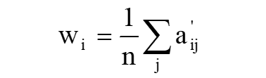
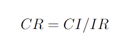
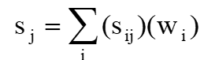

Apa Itu AHP ?
Analitycal Hierarchy Process (AHP) merupakan suatu model pendukung keputusan yang dikembangkan oleh Thomas L. Saaty. Model pendukung keputusan ini akan menguraikan masalah multi faktor atau multi kriteria yang kompleks menjadi suatu hirarki. Hirarki didefinisikan sebagai suatu representasi dari sebuah permasalahan yang kompleks dalam suatu struktur multilevel dimana level pertama adalah tujuan, yang diikuti level faktor, kriteria, sub kriteria, dan seterusnya ke bawah hingga level terakhir dari alternatif. Dengan hirarki, suatu masalah yang kompleks dapat diuraikan ke dalam kelompok-kelompoknya yang kemudian diatur menjadi suatu bentuk hirarki sehingga permasalahan akan tampak lebih terstruktur dan sistematis.
Mengapa Menggunakan AHP ?
AHP sering digunakan sebagai metode pemecahan masalah dibanding dengan metode yang lain karena beberapa alasan sebagai berikut:
- Struktur yang berhirarki, sebagai konsekuesi dari kriteria yang dipilih, sampai pada subkriteria yang paling dalam.
- Memperhitungkan validitas sampai dengan batas toleransi inkonsistensi berbagai kriteria dan alternatif yang dipilih oleh pengambil keputusan.
- Memperhitungkan daya tahan output analisis sensitivitas pengambilan keputusan.
Kelebihan dari metode AHP sebagai berikut:
- Dapat digunakan pada elemen-elemen sistem yang saling bebas dan tidak memerlukan hubungan linier.
- Menyediakan skala pengukuran dan metode untuk mendapatkan prioritas.
- Mempertimbangkan konsistensi logis dalam penilaian yang digunakan untuk menentukan prioritas.
- Membuat permasalahan yang luas dan tidak terstruktur menjadi suatu model yang fleksibel dan mudah dipahami
- Menyediakan skala pengukuran dan metode untuk mendapatkan prioritas.
- Mempertimbangkan prioritas relatif faktor-faktor pada sistem sehingga pengambil keputusan mampu memilih altenatif terbaik berdasarkan tujuan mereka.

Kekurangan dari metode AHP sebagai berikut:
- Ketergantungan model AHP pada input utamanya. Input utama ini berupa persepsi seorang ahli sehingga dalam hal ini melibatkan subyektifitas sang ahli. Selain itu juga, model menjadi tidak berarti jika ahli tersebut memberikan penilaian yang keliru.
- Tidak ada pengujian secara statistik. Metode AHP ini hanya metode matematis tanpa ada pengujian secara statistik sehingga tidak ada batas kepercayaan dari kebenaran model yang terbentuk.

Perhitungan dengan AHP
Membuat hierarki
Permasalahan pada AHP didekomposisikan ke dalam hirarki kriteria dan alternatif
Penilaian kriteria dan alternatif
Kriteria dan alternatif dilakukan dengan perbandingan berpasangaan. Menurut Saaty (1988), untuk berbagai persoalan, skala 1 sampai 9 adalah skala terbaik untuk mengekspresikan pendapat
Menentukan prioritas
Untuk setiap kriteria dan alternatif perlu dilakukan perbandingan berpasangan. Bobot dan prioritas dihitung dengan matriks atau penyelesaian persamaan.
Mengukur konsistensi
Hal-hal yang dilakukan dalam langkah ini adalah :
1. Membuat Matriks perbandingan berpasangan
2. Menghitung setiap baris matriks berpasangan
3. Normalisasi setiap kolom j, sehingga setiap kolom berjumlah 1
4. Menghitung bobot kriteria, dengan rumus :
Menghitung Consistency Index(CI)
Menghitung Indeks Konsistensi dengan rumus :

Menghitung Consistency Ratio(CR)
Menghitung Ratio Konsistensi dengan rumus :
Memeriksa konsistensi hierarki
Jika nilainya lebih dari 10%, maka penilaian data judgment harus diperbaiki. Namun jika Cocsistency Ratio(CI/IR) ≤ 0.1, maka hasil perhitungan bisa dinyatakan benar.
Matriks Perbandingan Berpasangan Untuk Setiap Kriteria
Pada tahap ini, kita mencari matriks perbandingan berpasangan untuk setiap kriteria yang ada, kemudian mencari bobot alternatifnya
Hal-hal yang dilakukan dalam langkah ini adalah :
1. Menentukan cost/profit setiap kriteria
2. Menghitung matriks berpasangan. Jika kriteria termasuk profit maka setiap baris harus dibagi dengan nilai maximum, sedangkan jika kriteria termasuk cost, maka nilai minimum dibagi dengan nilai pada setiap baris
3. Mencari Bobot alternatif dengan membagi matriks perbandingan dengan jumlah kolomnya
4. Menghitung jumlah bobot alternatif dan harus sama dengan 1
Perangkingan
Sebelum melakukan perangkingan, terlebih dahulu untuk menghitung total skor, dengan rumus :
Pilihlah alternatif dengan total skor tertinggi